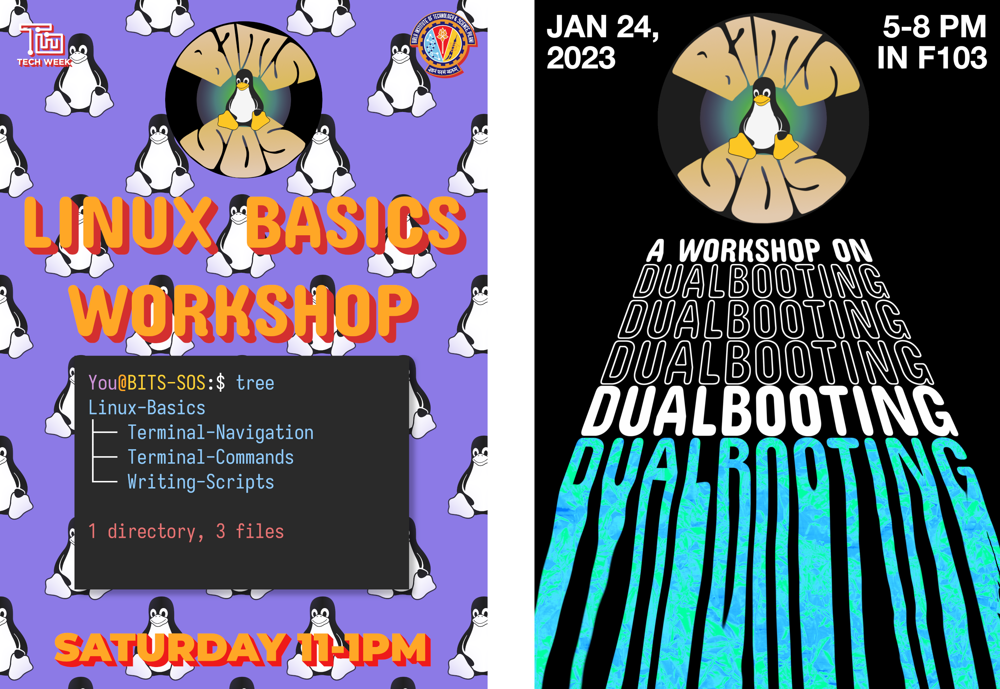

BITS-SOS
1. What is SOS?
We are a community of people that love Open Source software
2. What do we do?
At SOS, we're primarily dedicated to improving the GNU/Linux adoption on campus. We also dabble in various InfoSec-related events to demonstrate the practical application of open source technologies.
3. Workshops

Details
Every year, we hold a Dualbooting and a Linux Basics workshop. We will also hold workshops on Networking and Cybersecurity, so keep an eye out for announcements!
4. CTFs
A Capture the Flag tournament involves solving various tasks in the domains of Reverse Engineering, Web Exploitation, Open Source Intelligence, Cryptography and many others.
Ranking
- 1st place in IIT Goa's CTF
- 2nd place in BITS Goa's CTF and IIT Hyderabad's Enigma event
- Top 5 in a number of other CTFs
- Ranked 25th all over India
5. If you want to join us…
We're looking for people that use GNU/Linux and feel at home inside a terminal. If you feel like you fit the bill, please reach out to us here.
6. Link to these slides

7. Contacts
| President | Secretary |
|---|---|
| Sarthak Shah | N Pranav Krishna |
| 8767059061 | 6309481575 |